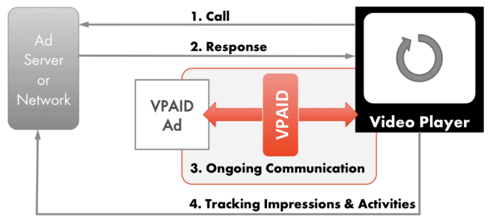

1. Version
1.02. Executive Summary
The SIVIC standard is intended to address the original mandate of the VPAID spec: to establish a common communication protocol between video players and ad units that allows a single “executable ad” (one that requires software logic to be executed as part of ad playback) to be displayed as an enhancement of standard video advertisement, in any compliant video player, with the result that advertisers using VPAID ads can provide rich ad experiences for viewers and collect ad playback and interaction details that are just as rich as the ad experience.
The SIVIC revision is needed specifically to address the following concerns with VPAID:
-
Publisher control: compatibility with running the interactive code in parallel to the video rather than having the code manage the video delivery, incorporating the following:
-
VAST 4 style delivery (interactive code delivered separately from the media file)
-
Compatibility with server-side ad insertion, including live streams
-
Compatibility with the need to pre-cache at least the video asset on mobile
-
-
Security: compatibility with running in a “protected”/safe iframe and/or being passed a proxy video object by the publisher
-
Clarity of purpose: Movement of verification and viewability codebase to a separate codebase, either client-resident in the case of the OM SDK or a separate call to a verification script in VAST 4.1
-
Clarity of purpose, security, performance: Unintended usage of VPAID that is disruptive to the user experience and/or publisher operations (specifically client-side arbitration, but other scenarios may exist)
By specifying a separation of the video asset from the codebase, VAST 4.0 + has already done some of the work required to resolve the issues above. The SIVIC spec is intended to close the gaps for the purpose of enabling and reporting on rich (interactive and dynamic) video ad experiences. Viewability and verification will now be handled in separate standard efforts.
Additionally, the new standard should support all reasonably well-adopted ad formats currently available using VPAID.
3. Intended Audience
Anyone involved in digital video advertising can benefit from being familiar with this specification, however implementation details are targeted toward the developers of executable video ads and of video players intended to support interactive and/or dynamic video ads enabled by the spec. Specifically, video software engineers and video product managers should use this document as a guide when implementing technology designed to support SIVIC.
4. Introduction
4.1. Enabling Advanced Video Advertising
Standard video ads are limited in what they can do and what they can track. They play back linearly from start to finish and support only the tracking provided to the publisher in advance via VAST.
In cases where the player environment is capable of supporting execution of code as part of the video playback experience, that code can be used to present the viewer with an array of interactive and/or dynamic features, commonly including additional video or image galleries, more detailed product information, store or dealer locators, and audience-specific personalized elements.
The SIVIC specification is intended to standardize the communication needed between the ad player and the ad creative itself. SIVIC is similar to the VPAID spec that preceded it in this regard.
4.2. Video Ad Flow
The process of serving an ad is also more or less unchanged from the earlier VPAID specification, with two main exceptions.
-
Access to the video is no longer mediated by the code layer described in this spec, as was the case for VPAID. Pre-caching for mobile and SSAI require direct access to the video and this is reflected in the VAST 4.1 spec, which now separates the video media file from the
InteractiveCreativeFileasset. Removing this parent-child relationship between the code and the video also no longer allows the code to act as a gatekeeper for the video, which led to the exploitation of VPAID for client-side arbitration. -
SIVIC also has to account for the SSAI use case - in this case, the video ad is part of an ongoing video stream delivered by the publisher and the SIVIC code is downloaded and executed on a parallel path to the stream.

the diagram above will need to be revised to account for SSAI and non-SSAI scenarios
4.3. Cross-Platform Support
As was the case with VPAID, SIVIC is designed to be a cross-platform standard, and should be the preferred standard for enabling advanced video creative on any device capable of supporting the execution of ad-resident code on the device, including desktop, mobile and OTT.
4.4. Scope and Limitation
The most important change in scope between VPAID and the SIVIC specification is that SIVIC is now only intended to be used to support advanced video creative. Verification and viewability are now handled by the Open Measurement spec, and part of the rationale for revising SIVIC is clarifying and narrowing the usage of code by ad vendors to support the publishers’ need for security and performance. Any use of the SIVIC spec to support something other than interactive or dynamic content within the ad unit should be by default considered as counter to the intentions of the spec.
Another out-of-scope consideration for this spec is that there may be cases where the device is not capable or not willing to execute third-party code alongside the video. In these cases an alternate “thin client” solution may need to be provided using VAST or another approach, but it will not be addressed here. An example of advanced creative supported by VAST include end cards executed using VAST companion assets, as well as proprietary ad units developed by several mobile SDKs to support advanced video executions in a manner that is easily pre-cached.
4.5. Market Needs
The VPAID spec that preceded the SIVIC spec was outlined to follow general principles, some of which are generally accepted good design principles (simplicity, portability, consistency) and others of which reinforce at this point relatively well-known aspects of the relationship between the player and the ad (the player is in control, and implements support for the full spec to support a variety of ad units, whereas a given ad unit implements only the aspects of the spec that it needs).
In the hopes of going a bit deeper than the abstract principles underlying the spec in this new revision, instead we reflect below the market needs driving the replacement of VPAID with SIVIC.
-
Publisher needs:
-
Security
-
Performance
-
Low latency
-
Protection of publisher page creative elements from ad code
-
The minimization of errors and playback issues
-
-
Agency/advertiser/ad platform needs:
-
Maximum creative control, without interfering with publisher needs above
-
Access to player-managed capabilities like fullscreen
-
Ability to pass data into the creative
-
A defined interface for communicating with elements outside the player and ad
-
Ability to understand playback environment/device capabilities that may be required for creative execution
-
The ability to correlate the measurement of interactive events with other measurement now happening outside of VPAID (eg viewability and verification)
-
-
Needs of both:
-
Document clarity - we should be careful to minimize any confusion about how to implement a player or recognized ad format
-
Position relative to other standards (VAST, OMID, etc) in any cases of overlap or potential confusion
-
4.6. Primary Use Cases
The standards revisions in this document intend to support scalable, performant interactive video execution in the following cases
-
Server-side ad insertion, with interactive creative operating in parallel to a publisher-controlled video stream
-
Mobile and other bandwidth-constrained scenarios that require pre-loading of assets to enable instant playback
-
Desktop and other playback scenarios currently executed via VPAID, with a reduction in errors, non-standard executions, and performance and security issues. The significant change between VPAID and SIVIC for these scenarios is that video playback control now resides with the publisher player in all cases.
-
In service of all of the above, it is also understood that this version of the SIVIC spec should be interoperable with VAST 4.1.
-
In all cases the understanding is that the playback environment (device and platform) support and permit the execution of code as required by SIVIC.
4.7. Video Player Requirements
The video player must implement ad loading, check for presence of SIVIC, manage
video playback, and if present, implement the correct SIVIC version. Recovery
mechanisms should also be in place should the ad unit fail to follow specified
protocols correctly. For example, if the video player does not receive the
AdStopped event from an ad unit after sending a call to stopAd, the video
player should be prepared to react appropriately.
§8.3 Ad Completion provides details on error handling and recommended recovery action for specific timeout situations.
4.7.1. Displaying Ad Unit Creative
The video advertising industry expects that an impression has indicated that an ad was viewed by an end user. Therefore, the video player should ensure that no other visual elements from the video player, the webpage, or other ads, display over a video ad that is currently in progress.
4.7.2. Close Control
This specification does not mandate a close control or behavior by the video ad creative or the video player. Currently, the publisher video player is in full control and can dismiss the video ad creative at any point in time. The video ad creative can also dismiss itself at any point in time. Some implementations may have a publisher provided close control and others may not. Video ad creatives may opt to show its own close control. Video ad creatives and video players should ensure that consumers are presented with a good ad experience.
4.8. Ad Unit Requirements
If the ad unit implements SIVIC, it must indicate the correct version. The ad unit must implement all methods and properties listed, but can either decline from responding or returning a value that indicates that the method or property is not supported.
The ad unit should never allow uncaught exceptions to be thrown during calls into SIVIC from the video player. See Implementation sections for more specific requirements.
5. Messaging Protocol
To facilitate asynchronous communication between the video player and the SIVIC creative, we employ a messaging protocol.
The protocol defines both the data structure of messages exchanged by both parties and the algorithms needed to reliably handle the exchange of these messages.
The protocol is designed to be easily implemented on top of the postMessage interface, available across iframe elements which are
used to isolate the SIVIC ad from the video player.
add link to final location of reference implementation
5.1. Transport Layer
A transport is a communication mechanism that can send serialized messages between two parties. In SIVIC’s case those are the video player and the creative.
A serialized message is a text string that one of the parties, the sender, forwards to the other party, the receiver, through the transport.
The transport must guarantee the following properties:
-
It must guarantee that both parties of the channel are unambiguously defined, and that only those two parties observe any serialized messages sent by either of them.
-
It must guarantee that all serialized messages eventually get delivered to the other party.
-
It must guarantee that the serialized messages are delivered intact, without any modifications.
-
It must guarantee that all serialized messages are delivered in the order that they were sent by the sender.
The transport is not required to deliver serialized messages synchronously, but it should make a best effort to deliver them as soon as possible.
Note: This means that a sender can not assume that a message is delivered to the receiver unless the receiver sends a message back that acknowledges receipt. It also means that exceptions on the receiver’s side can’t be caught by the sender unless the receiver explicitly sends a message back to the sender with the exception.
5.1.1. postMessage Transport
Unless otherwise negotiated by both parties, in SIVIC the video player and
creative will use the postMessage API as their transport across the iframe boundary separating them.
The postMessage API conforms to the required properties of a transport.
5.1.2. Message Serialization
To serialize a Message to a serialized message,
apply JSON.stringify to the Message data structure. The resulting DOMString represents the serialized message.
To deserialize a serialized message to a Message data structure, apply JSON.parse to the serialized message.
The resulting Object has the Message data structure.
The sender should not transmit any serialized messages that cannot be correctly deserialized by the receiver.
The receiver should discard and ignore any serialized messages that it cannot correctly deserialize.
5.2. Session Layer
Multiple sessions maybe active over a single transport at any given time.
A session is uniquely identified by a session identifier. All messages belonging to a session must reference the same session identifier.
5.2.1. Establishing a new session
A session is established by running the establish a new session algorithm.
To establish a new session, you must run the following steps:
- Input
-
none
- Output
-
sessionIdPromise, a
Promisethat will resolve to a session identifier
-
Let sessionId be a new session identifier.
It is recommended to use a UUID for the session identifier.
-
Let type be
createSession. -
Let args be
undefined. -
Let sessionIdPromise be a new unresolved
Promise. -
Start the send an acknowledgement message algorithm with sessionId, type and args. Let ackPromise be the return value.
-
Return sessionIdPromise.
-
When ackPromise resolves:
-
If it is fulfilled, then resolve sessionIdPromise with sessionId.
-
If it is rejected with error, then reject sessionIdPromise with error.
-
5.2.2. Sending messages
To send a message through a session, run the send a message algorithm.
To send a message, you must run the following steps:
- Input
-
sessionId, a session identifier
type, a message type
args, an optional object to be submitted with the message
- Output
-
messageId, a message identifier
While most messages can be sent "fire-and-forget", some require the sender to
be informed that they were properly received and handled by the receiver. The
protocol uses semantics similar to the Promise API for this.
To send an acknowledgement message, you must run the following steps:
- Input
-
sessionId, a session identifier
type, a message type
args, an optional object to be submitted with the message
- Output
-
promise, a
Promisewhich will eventually resolve to the value sent back by the other party
-
Run the send a message algorithm with sessionId, type and args. Let messageId be the return value.
-
Let promise be a new unresolved
Promise. -
Add promise to the resolve list, annotated with sessionId and messageId.
-
Return promise.
5.2.3. Receiving messages
To be able to detect new incoming sessions and receive messages from existing sessions, every party should start running the handle incoming messages algorithm as soon as possible.
To handle an incoming message, you must run the following steps:
- Input
-
serializedMessage, a serialized message received from the transport
- Output
-
none
-
Let message be the result of running
JSON.parseon serializedMessage.-
If
JSON.parsethrew an exception, ignore the exception and abort execution of this algorithm.
-
-
If message.
typeisresolveorreject:-
Let sessionId be message.
sessionId. -
Let promise be the promise in the resolve list for sessionId and messageId, if any.
-
If a promise was found:
-
-
Otherwise: pass message to the user of the protocol for handling.
5.3. Message Data Structure
A protocol message is represented by the Message data structure.
dictionary {Message required DOMString ;sessionId required unsigned long ;messageId required DOMString ;type any ; };args
A Message has an associated sessionId, a string that uniquely
identifies the messaging session to which the Message belongs.
A Message has an associated messageId, an integer that
increments with each message sent by the sender over the messaging session specified by sessionId.
Note: The combination of sessionId and messageId uniquely identifies a single message. The combination of the values of these two
attributes may never occur twice.
A Message has an associated type, a string that defines the type
of message that is being sent and informs the receiver how to interpret the args parameter.
A Message may have associated args, which are type-specific additional arguments. The data structure and meaning
of args is defined in the respective message type definitions.
5.3.1. resolve messages
type must be resolve
args must be a ResolveMessageArgs object:
dictionary {ResolveMessageArgs required unsigned long ;messageId any ; };value
messageId refers to the messageId attribute
of the message that is being resolved.
value may include a value associated with this resolve message.
5.3.2. reject messages
type must be reject
args must be a ResolveMessageArgs object.
value may include an error message associated with this reject message.
dictionary {ResolveMessageArgsValue unsigned long ;errorCode DOMString ; };message
6. API Reference
6.1. Messages corresponding to VAST tracking events
All ID’s are prepended with SIVIC:Tracking. The player must report each event to the ad whenever a tracking pixels is reported for that tracking event type. These names correspond with VAST 4.1 tracking names.
For example:
{
type: "SIVIC:Tracking:impression",
args: {}
}
6.1.1. SIVIC:Tracking:error
SIVIC:Tracking:error message is sent with args property:
dictionary {TrackingErrorArgs required DOMString ; };errorCode
errorCode is error code specified by VAST.
6.1.2. Other tracking events that must be supported
-
SIVIC:Tracking:impression
-
SIVIC:Tracking:creativeView
-
SIVIC:Tracking:mute
-
SIVIC:Tracking:unmute
-
SIVIC:Tracking:pause
-
SIVIC:Tracking:resume
-
SIVIC:Tracking:rewind
-
SIVIC:Tracking:skip
-
SIVIC:Tracking:playerExpand
-
SIVIC:Tracking:playerCollapse
-
SIVIC:Tracking:loaded
-
SIVIC:Tracking:start
-
SIVIC:Tracking:firstQuartile
-
SIVIC:Tracking:midpoint
-
SIVIC:Tracking:thirdQuartile
-
SIVIC:Tracking:complete
-
SIVIC:Tracking:otherAdInteraction
-
SIVIC:Tracking:progress
-
SIVIC:Tracking:closeLinear
-
SIVIC:Tracking:fullscreen
-
SIVIC:Tracking:exitFullscreen
-
SIVIC:Tracking:expand
-
SIVIC:Tracking:collapse
-
SIVIC:Tracking:clickThrough
-
SIVIC:Tracking:clickTracking
-
SIVIC:Tracking:customClick
6.2. Messages from the video element
All video messages will be prepended with SIVIC:Video. All video messages should be sent after their corresponding media events are called. If the video is wrapped or native the player should make its best effort to make messages correspond with the html5 video element callbacks.
6.2.1. SIVIC:Video:durationchange
Should be called after the durationchange event is triggered on the video element.parameters:
-
duration(float): The number in seconds of the video duration. For server side ad insertion this must be calculated to be the total duration of the ad.
6.2.2. SIVIC:Video:ended
Should be called after the ended event is triggered on the video element.6.2.3. SIVIC:Video:error
Should be called after the error event is triggered on the video element.parameters:
-
error(string): corresponds to videoElement.error.code.
-
message(string): corresponds to videoElement.error.message.
6.2.4. SIVIC:Video:pause
Should be called after the pause event is triggered on the video element.6.2.5. SIVIC:Video:play
Should be called after the play event is triggered on the video element.6.2.6. SIVIC:Video:playing
Should be called after the playing event is triggered on the video element.6.2.7. SIVIC:Video:seeked
Should be called after the seeked event is triggered on the video element.6.2.8. SIVIC:Video:seeking
Should be called after the seeking event is triggered on the video element.6.2.9. SIVIC:Video:timeupdate
Should be called after the timeupdate event is triggered on the video element.parameters:
-
currentTime(number): corresponds to videoElement.currentTime attribute. For server side ad insertion this must be calculated to be the total time the video ad has played. For example: if the video element time is 500 seconds but the ad started playback 10 seconds ago (in DAI), currentTime should be set to 10 seconds.
6.2.10. SIVIC:Video:volumechange
Should be called after the volumechange event is triggered on the video element.parameters:
-
volume(number): corresponds to videoElement.volume attribute.
6.3. Responses from the video element
6.3.1. Response To SIVIC:Creative:getVideoState
6.3.1.1. resolve
-
currentSrc(string): The src of which ad has been chosen. This may need correction for server side ad insertion as it should indicate the video media selected and not the url to the media playing.
-
currentTime(number): This should be the current time from the first frame of the video ad. In the case of DAI, this number needs to be corrected. For example: if the video element time is 500 seconds but the ad started playback 10 seconds ago (in DAI), this should be 10 seconds.
-
duration(number): This should be the duration of the ad. Server side ad insertion may need correction.
-
ended(boolean): corresponds exactly to video element ended attribute
-
muted(boolean): corresponds exactly to video element muted attribute
-
paused(boolean): corresponds exactly to video element paused attribute
-
volume(number): corresponds exactly to video element volume attribute
-
fullscreen(boolean): true if the video element is full screen, false otherwise
should we also include video element location and size here?
6.4. Messages from the player
All messages from the player should be prepended with SIVIC:Player.For example:
{
id: "SIVIC:Player:adStopped",
args: {
code: 0
}
}
6.4.1. SIVIC:Player:resize
parameters:
dictionary {resizeParameters required videoDimensions ;videoDimensions required creativeDimensions ;creativeDimensions required string ;mode required boolean ; };fullScreen
dictionary {videoDimensions required int ;x required int ;y required int ;width required int ;height float ; };transitionDuration
dictionary {creativeDimensions required int ;x required int ;y required int ;width required int ;height float ; };transitionDuration
The videoDimensions communicate to the creative the dimensions of the video element.
The creativeDimensions tell the creative where the iframe is located as well as its dimensions. If the iframe is
not yet visible (like during initialization) these dimensions will be the expected dimensions when it does become visible.
-
-
xThe x offset of the video. It should initialize at 0. -
yThe y offset of the video. It should initialize at 0. -
widthThe width in pixels of the video. -
heightThe height in pixels of the video. -
transitionDurationNumber in seconds the transition animation should take, this can be accomplished by transition-property in css
-
-
-
xThe x offset of the creative. It should initialize at 0. -
yThe y offset of the creative. It should initialize at 0. -
widthThe width in pixels of the creative. -
heightThe height in pixels of the creative. -
transitionDurationNumber in seconds the transition animation should take, this can be accomplished by transition-property in css
-
-
modeCan be "portrait" or "landscape". -
fullScreenTrue if fullscreen.
6.4.2. SIVIC:Player:init
To assist in preloading assets the SIVIC:Player:init before SIVIC:Player:startCreative. The player should call this function early enough before playback so that assets can be displayed as soon as the ad starts.
The ad, however, should not assume that it has any amount of time between the SIVIC:Player:init call and the SIVIC:Player:startCreative message. For example a preroll might call SIVIC:Player:startCreative immediately after SIVIC:Player:init.
When calling SIVIC:Player:init, the player shall provide the following parameters:
dictionary {initParameters required EnvironmentData ;EnvironmentData required CreativeData ; };CreativeData
dictionary {CreativeData required string ;adParameters string ;adId string ;creativeId string ;adServingId string ; };clickThruUrl
dictionary {EnvironmentData required videoDimensions ;videoDimensions required creativeDimensions ;creativeDimensions required string ;mode required boolean ;fullScreen required boolean ;fullscreenAllowed required boolean ;variableDurationAllowed required SkippableState ;skippableState string ;siteUrl string ;appId string ;useragent string ;deviceId boolean ;muted float ; };volume enum {SkippableState ,"playerHandles" ,"adHandles" };"notSkippable"
-
CreativeDatais used to pass information associated with the creative (sometimes taken from VAST). In a VAST context, the ad unit should pass the value for either theLinearorNonlinearAdParameterelement specified in the VAST document.-
adParametersad parameters from VAST, or an empty string if unknown. -
adIdthe ID of the ad from VAST, or an empty string if unknown. -
creativeIdthe ID from the creative or an empty string if unknown. -
adServingIdQuasi-unique id generated by ad server and passed through all 1st and 3rd party reporting to facilitate the marriage of impression-level data across multiple reporting systems. In VAST 4.1 and later this id is provided in theAdServingIDnode. -
clickThruUrlThe click through url, provided from VAST. If there is no click through url this should be an empty string.
-
-
EnvironmentDatais used to pass information associated with the publisher playback environment. The object should have the following fields.-
videoDimensionsindicates the video display area, see §6.4.1 SIVIC:Player:resize -
creativeDimensionsindicates the creative display area, see §6.4.1 SIVIC:Player:resize -
modeCan be "portrait" or "landscape". For desktop choose "landscape". -
fullScreenTrue if fullscreen. -
fullscreenAllowed: True if the creative may choose to display or not display a fullscreen option -
variableDurationAllowed: If set to true the player must allow the SIVIC creative to pause player-controlled video playback during the ad. Iffalseit will not (live streaming is a use case). An example use case here is a clickthru overlays, wherevariableDuration(ad requirement) isfalse, butvariableDurationAllowed(publisher capability) can betrueorfalse. It should not be used in any case where disallowing the pause interferes with the ad KPIs (for example if it can interfere with completions, time spent in an interactive component, etc). -
skippableState: indicates whether the ad may be skippable and which party controls the skippability, must be one of theSkippableStateenum values.-
playerHandles: The player will render a skip button and might skip the ad. -
adHandles: The ad may or may not render a skip button. -
notSkippable: The ad cannot be skipped and the SIVIC creative should not render a skip button. This may be common in DAI for live streams.
-
-
siteUrlIndicating the website the ad will play on, for example if the site waswww.xyz.com/videoId, this information would include at leastwww.xyz.com. The player may give more information. Desired for reporting and troubleshooting. -
appIdThe id of the app if applicable -
useragentData about sdks and players -
deviceIdIDFA or AAID would be used primarily for 3rd party tracking of custom events -
muted(boolean): True if the audio is muted. -
volume(number): The volume which should be between 0 and 1.0.
-
useragent needs some definition or a link to where how this should be populated.
6.4.3. SIVIC:Player:startCreative
SIVIC:Player:startCreative must be called after the iframe is made visible.
6.4.4. SIVIC:Player:adSkipped
This indicates the player will skip the ad. The player should hide the creative and stop video playback in this case. The player should wait for a response before unloading the creative iframe.6.4.5. SIVIC:Player:adStopped
This indicates the player will stop the ad. The player should hide the creative and stop video playback in this case. The player should wait for a response before unloading the creative iframe.parameters:
-
code(int): reason for ad stopping
These codes need to be defined.
6.4.6. SIVIC:Player:fatalError
The player has encountered a fatal error that will cause ad playback to stop. The player should stop video playback if possible. Regardless of if playback is stopped the player should hide the creative and try to wait for a response before unloading the creative iframe.-
errorCode(int): reason for error. See §8.2.1 Error Codes
-
errorMessage(string): Any additional information.
6.5. Responses from the player to the creative
6.5.1. Response To SIVIC:Creative:requestVideoLocation
6.5.1.1. resolve
They player may or may not move the video but in either case it will resolve and tell the creative the video location. parameters:-
x (int): The new video x location.
-
y (int): The new video y location.
6.5.2. Response To SIVIC:Creative:ready
6.5.2.1. resolve
parameters:-
version (string): The version of SIVIC that will be used. The version from the player will be the source of truth.
6.5.2.2. reject
parameters:-
reason (string): An optional string error message.
-
errorCode (int): the code for why the creative won’t play. See §8.2.1 Error Codes
6.5.3. Response To SIVIC:Creative:requestSkip
6.5.3.1. resolve
Upon resolving this request, the player must call §6.4.4 SIVIC:Player:adSkipped.6.5.3.2. reject
The creative should continue to playback as though it could not be skipped.6.5.4. Response To SIVIC:Creative:requestStop
6.5.4.1. resolve
Upon resolving this request, the player must call §6.4.5 SIVIC:Player:adStopped.6.5.4.2. reject
For some reason the player could not stop playback. The creative may continue to render as though it was not stopped.6.5.5. Response To SIVIC:Creative:requestPause
6.5.5.1. resolve
The player paused the video.6.5.5.2. reject
The player did not pause the video.6.5.6. Response To SIVIC:Creative:requestPlay
6.5.6.1. resolve
The player is playing the video.6.5.6.2. reject
The player did not play the video.6.5.7. Response To SIVIC:Creative:requestFullscreen
6.5.7.1. resolve
The player has gone full screen.6.5.7.2. reject
The player did go full screen.6.5.8. Response To SIVIC:Creative:requestChangeVolume
6.5.8.1. resolve
The player has changed the volume as requested.6.5.8.2. reject
The player did not change to the requested volume.6.5.9. Response To SIVIC:Creative:requestResize
6.5.9.1. resolve
The player has resized exactly as it has been requested.6.5.9.2. reject
The player did not resize to the exact request. If the player was only able to partially comply, it should still reject the message. Then the player should call the message §6.4.1 SIVIC:Player:resize to let the creative know what resize happened.6.5.10. Response To SIVIC:Creative:requestChangeAdDuration
6.5.10.1. resolve
The player changed the ad duration.6.5.10.2. reject
The player did not change the ad duration.6.5.11. Response To SIVIC:Creative:reportTracking
6.5.11.1. resolve
The player sends resolve if tracking has been sent out. Returning resolve on this message should not block waiting for a response from the site.6.5.11.2. reject
The player did not send the tracking pixel.parameters:
-
reason(string): An optional string error message
-
errorCode(int): The code for why the player did not attempt to send a tracking pixel. See §8.2.1 Error Codes
6.6. Messages from the Creative to the Player
All functions should be prepended with SIVIC:Creative6.6.1. SIVIC:Creative:ready
The very first call the SIVIC creative should make. This indicates it is loaded and ready to recieve messages from the player.Expects a response §6.5.2 Response To SIVIC:Creative:ready
6.6.2. SIVIC:Creative:requestSkip
The player should stop video playback if possible.If the player cannot stop video playback, the player still does not unload the iframe.
Expects a response §6.5.3 Response To SIVIC:Creative:requestSkip
6.6.3. SIVIC:Creative:requestStop
The player should stop video playback if possible.If the player cannot stop video playback, the player still unloads the iframe. The creative may hide all elements in this case if it doesn’t wish to be seen.
Expects a response §6.5.4 Response To SIVIC:Creative:requestStop
6.6.4. SIVIC:Creative:fatalError
After this message is received, the iframe should be unloaded and the video ad should stop playback if possible. If the video ad continues to play the iframe should still be unloaded.parameters:
-
errorCode(int): reason for error. See §8.2.1 Error Codes
-
errorMessage(string): Any optional additional information about the fatal error.
6.6.5. SIVIC:Creative:requestPause
Expects a response §6.5.5 Response To SIVIC:Creative:requestPause6.6.6. SIVIC:Creative:requestPlay
Expects a response §6.5.6 Response To SIVIC:Creative:requestPlay6.6.7. SIVIC:Creative:requestResize
Request resize should use the resizeParameters which are explained in §6.4.1 SIVIC:Player:resize
Expects a reponse §6.5.9 Response To SIVIC:Creative:requestResize
6.6.8. SIVIC:Creative:requestFullScreen
Expects a reponse §6.5.7 Response To SIVIC:Creative:requestFullscreen6.6.9. SIVIC:Creative:requestChangeVolume
paramaters:-
volume(float): a number between 0 and 1 indicating what volume the creative wants.
-
muted(boolean): True indicates the creative wants the volume muted.
Expects a reponse §6.5.8 Response To SIVIC:Creative:requestChangeVolume
6.6.10. SIVIC:Creative:reportTracking
paramaters:-
trackingUrls(Array
): an array or tracking pixels that the publisher should fire
Expects a response §6.5.11 Response To SIVIC:Creative:reportTracking
6.6.11. SIVIC:Creative:requestChangeAdDuration
Extension in duration should only be in response to user interaction.paramaters:
-
duration(int): The new duration of the creative. -2 indicates unknown ad duration.
Expects a response §6.5.10 Response To SIVIC:Creative:requestChangeAdDuration
6.6.12. SIVIC:Creative:clickThru
The creative must handle click-thru due to the nature of cross-origin iframes. This message must only be sent in response to a user-initiated click that is considered a click-thru by the creative.
The main purpose of this message is for the player to track click-thrus. Since not every navigation is a click-thru, it should not be used for adjusting media playback status (pause, mute). If the player wants to update media playback status as a result of navigation, it should detect it via some other environment-specific method (eg. Page Visibility API on web and in apps).
Parameters:
-
x (int): the x coordinate of the click relative to the left of the creative.
-
y (int): the y coordinate of the click relative to the top of the creative.
6.6.13. SIVIC:Creative:getVideoState
Expects a response §6.3.1 Response To SIVIC:Creative:getVideoState6.7. Responses from the creative to the player
6.7.1. Response To SIVIC:Player:init
6.7.1.1. resolve
The creative acknowledges the initialization parameters.6.7.1.2. reject
-
reason(string): An optional string error message
-
errorCode(int): The code for what went wrong in initialization. See §8.2.1 Error Codes
6.7.2. Response To SIVIC:Player:startCreative
6.7.2.1. resolve
The creative acknowledges that it has started playback. The player must make the creative visible to the user.6.7.2.2. reject
-
reason(string): An optional string error message
-
errorCode(int): The code for what went wrong in initialization. See §8.2.1 Error Codes
6.7.3. Response To SIVIC:Player:adSkipped
6.7.3.1. resolve
After resolve is called, the iframe will be removed.6.7.4. Response To SIVIC:Player:adStopped
6.7.4.1. resolve
After resolve is called, the iframe will be removed.6.7.5. Response To SIVIC:Player:fatalError
6.7.5.1. resolve
After resolve is called, the iframe will be removed.6.8. Referencing a SIVIC creative from VAST
When a SIVIC creative is referenced from a VAST document, the value for the apiFramework attribute in the InteractiveCreativeFile element must be SIVIC (all caps). This attribute identifies the SIVIC API for the creative.
Version information should be handled by the§6.5.2 Response To SIVIC:Creative:ready message
(rather than identified in the VAST file).
Another attribute of the InteractiveCreativeFile is variableDuration which
identifies whether the ad always drops when the duration is reached, or if it
can potentially extend the duration by pausing the underlying video or delaying
the adStopped event after adVideoComplete.
7. Common Workflows
7.1. How to Handle Ad Loading
The player must follow this workflow for loading an ad.
-
The player must create an iframe element for the SIVIC creative. The player iframe should start out hidden. The iframe should be capable executing javascript and loading resources.
-
The player starts listening on the window that is the parent of the iframe for messages from the creative.
-
The player sets the src element of the iframe to the url provided by the creatives VAST InteractiveCreativeFile element. The player should assume this will be a cross domain iframe.
-
The player waits until the creative inializes a session. §5.2.1 Establishing a new session The player responds with a resolve message. The resolve message includes the correlator that must be present in all messages going forward.
-
The player then calls §6.4.2 SIVIC:Player:init with all relevant parameters. The player waits until the creative responds with resolve. If the creative responds with reject, the player should immediately unload the creative’s iframe.
-
Where possible the player should wait until both the creative has responded to the §6.4.2 SIVIC:Player:init and the video is ready to start playing. Ready to start playing means the first frame will show and playback will continue.
-
When the video is started the player calls . The player must overlay the creative iframe over the video element exactly. The player must make the creative visible. The creative should respond to this message immediately with §6.7.2.1 resolve.
7.2. How to Handle Ad Playback
The video player is responsible for handling playback of the video as well as tracking video related events. The SIVIC creative on the other hand handles playback of interactive content and internal tracking related to interactivity (custom events, creative impression if desired (recommended)).
7.2.1. Ad Pause
If the variableDurationAllowed flag is set to true then
the player should enable video pause by the SIVIC creative via the
SIVIC:Creative:requestPause message. The player must respond to
SIVIC:Creative:requestPause with the AdPaused event.
When the SIVIC creative would like to resume video playback, it should call the SIVIC:Creative:requestPlay message. The player must respond to SIVIC:Creative:requestPlay message with resolve and play the video.
7.2.2. Ad Resizing and Fullscreen
can width / height coordination not be done through the iframe width height, which would not require any API?
The player may resize the ad slot. The player must call §6.4.1 SIVIC:Player:resize any time the ad slot size is changed.
If fullscreenAllowed is true, the SIVIC creative may
call the §6.6.8 SIVIC:Creative:requestFullScreen method. The player must resize only the ad
slot to fullscreen (not the video). The SIVIC creative then will resize the
video as it sees fit. The player must call §6.4.1 SIVIC:Player:resize on the SIVIC creative
with fullScreen set to true and width and width set to the full screen dimensions.
If player goes fullscreen on its own. Then the player must call §6.4.1 SIVIC:Player:resize on the SIVIC creative
with fullScreen set to true and width and width set to the full screen dimensions.
should the player not also resize the video slot?
7.3. How to Handle Ad End and Unload
Following are cases where ad can end:
-
Ad was skipped, either by player or creative (if the ad contains the skip button). See §7.3.1 Ad Skips.
-
The creative has fired §6.6.3 SIVIC:Creative:requestStop message and the player has allowed the ad to stop.
-
The player has fired §6.4.5 SIVIC:Player:adStopped message and the creative resolved.
-
Ad errors out. See §7.3.5 Ad Errors Out.
7.3.1. Ad Skips
Skip Ad Handled by Player
-
The player calls §6.4.4 SIVIC:Player:adSkipped on the ad.
-
The player hides the creative.
-
The creative may dispatch any tracking pixels via §6.6.10 SIVIC:Creative:reportTracking
-
The creative may wait for §6.5.11.1 resolve from the reportTracking call.
-
The creative dispatches
resolveon theadSkippedmessage §6.7.3.1 resolve. -
The player fires any skip tracking pixels.
-
The player unloads the ad.
Skip Ad Handled by Ad
-
The creative dispatches §6.6.2 SIVIC:Creative:requestSkip.
-
The player dispatches resolves the to the
requestSkipmessage. -
The player follows all the steps in
Skip Ad Handled by Player.
7.3.2. Ad Ends Before Video Completion
This scenario applies when the ad chooses to signal the player to kill it, typically at the prompting of the viewer. A good example would be a survey that allows the viewer to skip immediately to content when completed.
-
The ad cleans up and dispatches §6.6.3 SIVIC:Creative:requestStop.
-
The player unloads the ad.
7.3.3. Ad Extends Beyond Video Completion
This scenario is only possible when the variableDurationAllowed flag is set to true. Video
duration must only be extended in response to user interaction.
-
User interacts at any point during playback of the video, triggering extended ad portion.
-
The Creative dispatches §6.6.11 SIVIC:Creative:requestChangeAdDuration message with the new duration.
-
The ad enters its extended phase.
-
The creative dispatches §6.6.3 SIVIC:Creative:requestStop when extended phase is finished.
clarify the value of the duration property as the current text
does not seem to make much sense
7.3.4. Ad Completes at Video Completion
When an ad finishes at the same time as its video.
-
The player calls §6.4.5 SIVIC:Player:adStopped on the ad.
-
The player hides the creative.
-
The creative may dispatch any tracking pixels via §6.6.10 SIVIC:Creative:reportTracking
-
The creative may wait for §6.5.11.1 resolve from the reportTracking call.
-
The creative dispatches
resolveon theadSkippedmessage §6.7.4.1 resolve. -
The player unloads the ad.
7.3.5. Ad Errors Out
The SIVIC creative or the player may terminate the ad unit with an error at any time. If the SIVIC creative indicates an error, the player should try to stop ad unit playback. This might not be possible in server side stitched ads.
The player may error out if the ad does not respond with §6.6.1 SIVIC:Creative:ready and §6.7.1.1 resolve in a reasonable amount of time.
When an player errors out it must follow these steps.
-
The player calls §6.4.6 SIVIC:Player:fatalError on the ad.
-
The player hides the creative.
-
The creative may dispatch any tracking pixels via §6.6.10 SIVIC:Creative:reportTracking
-
The creative may wait for §6.5.11.1 resolve from the reportTracking call.
-
The creative dispatches
resolveon theadSkippedmessage §6.7.5.1 resolve. -
The player unloads the ad.
7.3.6. Additional Notes
The player may call §6.4.5 SIVIC:Player:adStopped at any time. The creative should respond with resolved after finishing its ad end logic. The player should allow 1 second
between calling §6.4.5 SIVIC:Player:adStopped and receiving resolved. The implementer of the
player should take into consideration that dropping a SIVIC ad unit before it has
dispatched resolved may result in tracking discrepancies, and that calling §6.4.5 SIVIC:Player:adStopped before the ad experience has ended (which is AFTER the optional
lean-in phase) could harm the overall ad experience.
The SIVIC creative may also dispatch §6.6.3 SIVIC:Creative:requestStop at any time, signaling to the
player that the ad has finished and unloaded. Any further interaction with the
SIVIC creative after requestStop may not result in the desired outcome. The same
is true for fatalError.
8. Protocol Details
8.1. Objects
8.1.1. Entry Point
partial interface mixin Window { [SameObject ]Ad (); };getSIVICAd
8.1.2. Ad Interface
interface {Ad string (handshakeVersion string );supportedVersion void (initAd CreativeData ,creativeData EnvironmentData );envData void ();startAd void ();stopAd void ();skipAd void (resizeAd float ,width float ,height ViewMode );viewMode readonly attribute float ;adWidth readonly attribute float ;adHeight readonly attribute float ; };adDuration
handshakeVersion()-
Negotiates version support between the player and ad. The player passes
supportedVersionset to the highest version it supports.handshakeVersionreturns the version it supports.
consider passing supportedVersion on the getSIVICAd() function
call, so the ad can respond with an object that matches the requested API
adDuration-
The full duration of the ad experience, including video and extended features
8.2. Error Handling and Timeouts
If the media cannot be played the player should terminate the ad and fire an error using the standard VAST errors.
If either the interactive ad or player wants to terminate with an error the player should fire a 902 error. In cases where this is not possible like live server side ad insertion the player should remove the ad overlay and continue tracking quartiles and completion.
The ad or player should pass a specific error code to indicate why it errored out. The ad can also hand back a string with extra details about the error.
8.2.1. Error Codes
This table indicates defined SIVIC error codes the ad may fire:- 1101
-
Resources could not be loaded. The SIVIC ad tried to load resources but failed.
- 1102
-
Incorrect interface passed from player. The video proxy interface or slot were not in concordance with the SIVIC spec.
- 1103
-
Playback area not usable by ad. The dimensions the ad needed were not what it received.
- 1104
-
Wrong handshake version.
- 1105
-
Ad not playable for a technical reason on this site.
- 1106
-
Request for expand not honored. The ad requested to expand but the player did not allow it.
- 1107
-
Request for pause not honored. The ad requested pause but the player did not pause.
- 1108
-
Play mode not adequate for ad. The ad requires playback control but the player is not giving control. This error should only fire if the VAST for the ad specified that it needs playback control.
- 1009
-
Ad internal error. The ad had an error not related to any external dependencies.
- 1010
-
Device not supported. The ad could not play or render on the device.
- 1199
-
Player cababilities not adequate for ad. Catchall error if the ad could not be more specific.
This table indicates defined SIVIC error codes the player may fire:
- 1201
-
Uncaught error. The SIVIC ad threw and exception it did not catch.
- 1202
-
Wrong handshake version.
8.3. Ad Completion
9. Security
10. Examples
11. Language-Specific Implementation Details
12. Terminology
- SIVIC VAST
-
The VAST document that contains the SIVIC ad unit components.
- SIVIC Ad Unit
-
The SIVIC ad video and the SIVIC ad creative.
- SIVIC Video
-
The SIVIC ad video component if it’s a progressively downloaded video file.
- SIVIC Video Stream
-
The SIVIC ad video component if it’s SSAI video.
- SIVIC Live Video Stream
-
The SIVIC ad video component if live streaming video.
- SIVIC Creative
-
The SIVIC ad creative component (html doc and assets) that overlays the SIVIC ad video.
- SIVIC Secondary Video
-
Video assets that are loaded as part of the SIVIC creative and not the primary video.
- Content Video
-
Any reference to video that is NOT a component or asset of the ad unit.